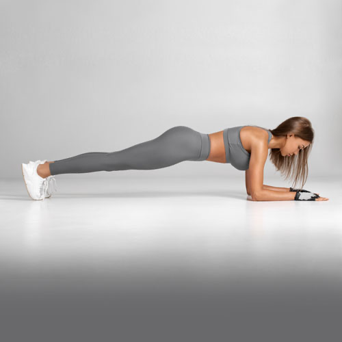
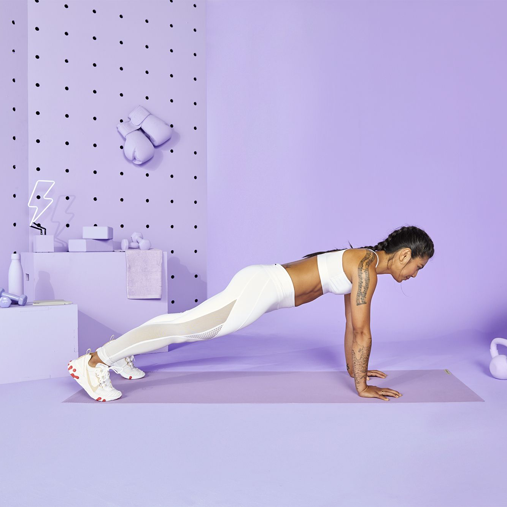
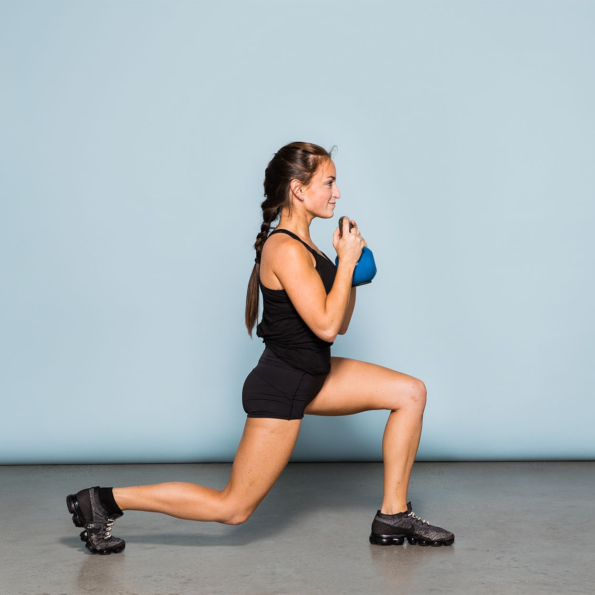
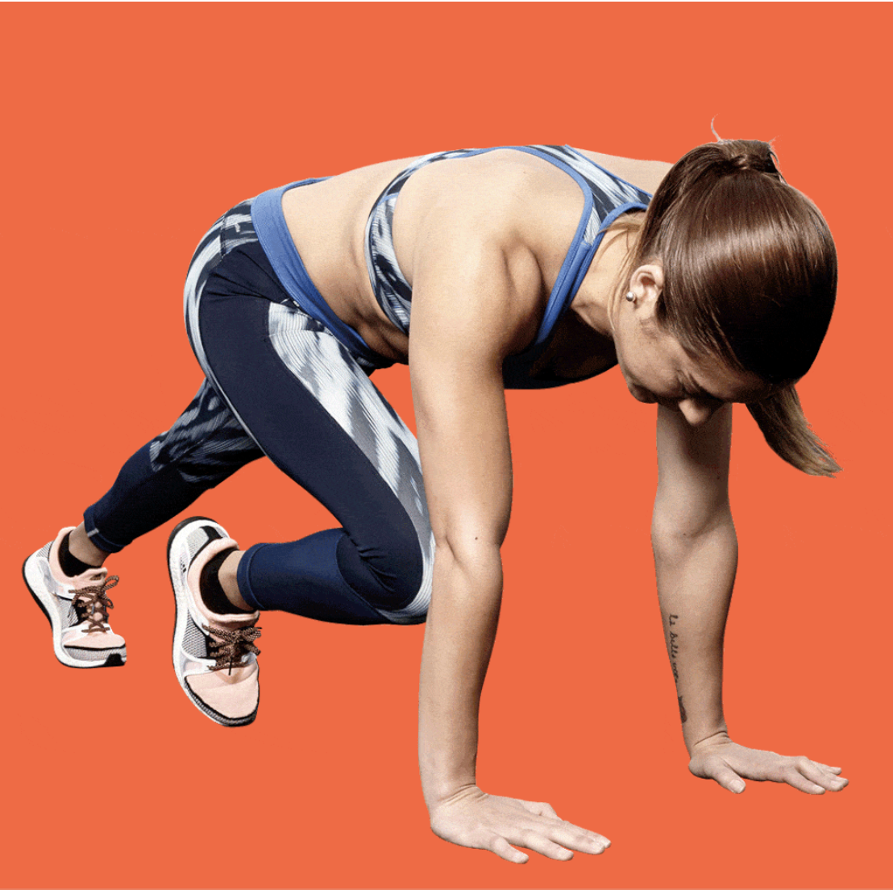
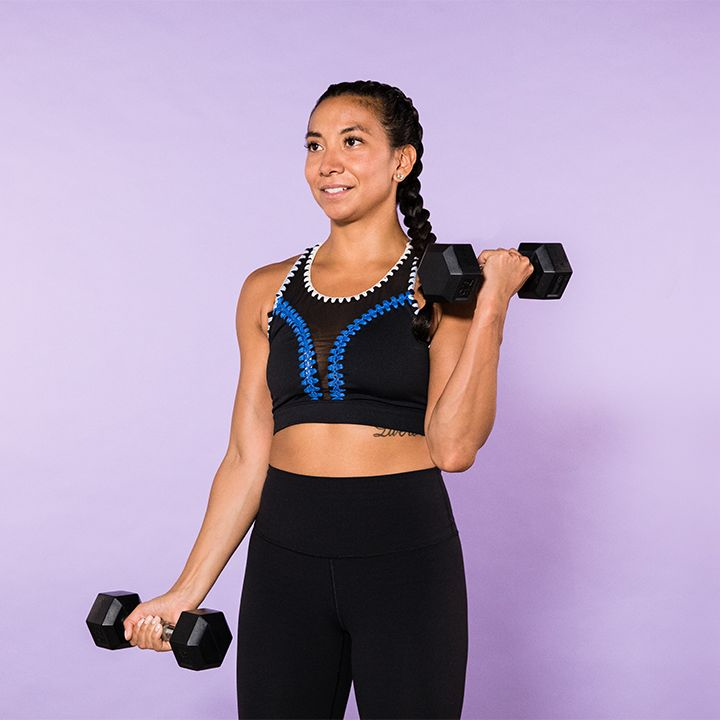
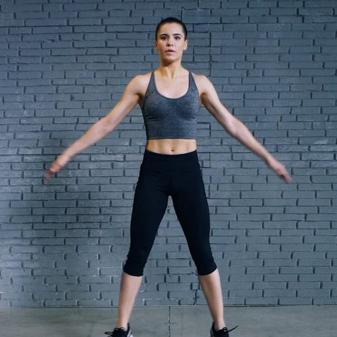
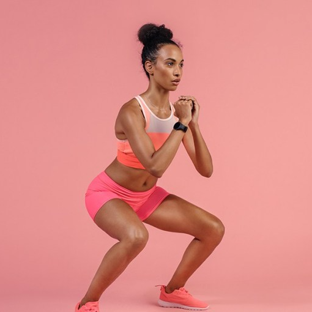
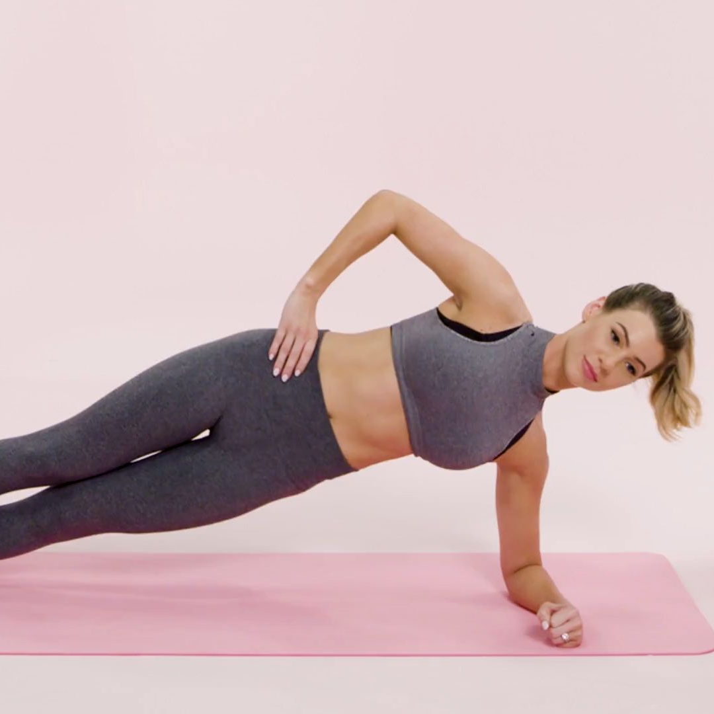
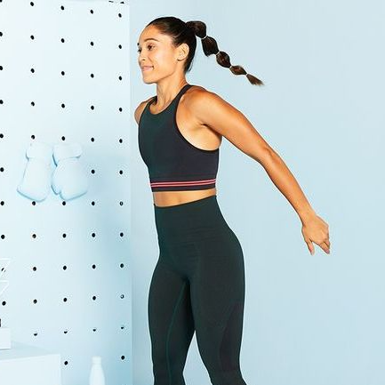

Workout Tips
Working out is not always easy and it can be hard to stay motivated for long periods of time. Here are a few tips to help you stay motivated!
Modifications
While pushing yourself is good, it is always important to listen to your body. By doing so, not only will you be able to keep up with fitness for a long time, you will also be able to prevent injuries. The following pictures demonstrate great ways to modify common exercises.
Plank
Kneeling Plank
Rather than holding yourself up on your feet, come down on your knees to hold a plank. This helps give you more control over your core.
Push-Ups
Incline Push-Ups
Place your arms on an elevated surface, such as a bench, table, or couch. This decreases the weight on your arms, making it easier to keep your body in a straight line.
Lunges
High-Knee Walks
Walk forward in a straight line, bringing your knee up to a 90 degree angle with each step. This allow to get the same range of motion workout in your hip and knee without putting pressure on your joints.
Mountain Climbers
Elevated Mountain Climbers
Elevate your upper body using a bench, table, or couch. Alternate pulling one knee towards the center of your body, tapping your toe at the top. Maintain a slow tempo.
Bicep Curls
Seated Bicep Curl
Seated on a bench with a pair of dumbells, let your arms relax down at the side of your body. Keeping your shoulder relaxed, bend your arms at the elbow to lift the dumbell towards your shoulder. Your elbow should stay tucked close to your ribs. Lower the weights to the starting position. Repeat until the set is complete.
Jumping Jacks
Low-Impact Jumping Jacks
Stand straight with your feet together and bring your hands down to your sides. Take a step to your right, lifting both hands together above your head. Step your right foot back in, lowering your hands to their starting position. Repeat with the left leg and continue alternating sides until the set is complete.
Squats
Stability Wall Squats
Take a stability ball and place it between your mid-back and the wall. With your feet shoulder width apart, lean slightly against the wall and bend your knees into a squat. Keeping the weight in your heels, stand back up when you have reached your desired range of motion. Repeat until the set is complete.
Side Planks
Kneeling Side Plank
Lay on your side with your shoulder stacked above your hand. Bend your bottom knee, keeping the top leg straight and long. Lift your body into a side plank position, keeping your lower knee on the floor and your core engaged. Try not to let your hips rise or drop. Repeat on the other side.
Burpees
Step Back Burpee
Standing tall with your feet shoulder width apart, squat down and place your hands on the ground in front of your feet. With your shoulders directly above your hands, step your feet back one at a time into a plank position. Keeping your core engaged, step your feet forward one at a time, bringing yourself back to a squat. Rise back into a standing positions and repeat the exercise until the set is complete.